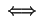
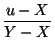
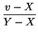
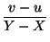

Next: Generating Random Integers
Up: Applications of Random Numbers
Previous: Applications of Random Numbers
Contents
Index
Generating Random Reals
It is common to want a stream of random numbers uniformly distributed
between, say, X and Y -- rather than between 0 and 1.
This is easily arranged
xrand(X, Y) = X + (Y - X)*rand()
i.e. just scale and shift. This does not affect the randomness in any
way. Let me give a partial argument to justify that claim. We know
that
rand() generates a sequence
{xk}  [0, 1) which is
uniformly distributed. We want to show that the sequence produced by
xrand(X, Y) has the same kind of property with respect to the
interval [X, Y). It is easiest to say this in probability
language. Let [u, v) be an interval in [X, Y). We want the
probability that a number produced by
xrand(X, Y) falls in this range
to be
(v - u)/(Y - X) -- i.e. the subset gets precisely its fair share
of elements. Now
[0, 1) which is
uniformly distributed. We want to show that the sequence produced by
xrand(X, Y) has the same kind of property with respect to the
interval [X, Y). It is easiest to say this in probability
language. Let [u, v) be an interval in [X, Y). We want the
probability that a number produced by
xrand(X, Y) falls in this range
to be
(v - u)/(Y - X) -- i.e. the subset gets precisely its fair share
of elements. Now
u xrand(X, Y) < v xrand(X, Y) < v |
 uX + (Y - X)*rand() < v |
|
| |
rand() <  |
|
Now, you can easily check that this range for
rand() lies in [0, 1).
The length of the range is
- = 
So the probability that
rand() falls in this range is, by the
uniform distribution of
rand(),
(v - u)/(Y - X). So this is the
probablity that
xrand(X, Y) gives a value in [u, v). This is
the value that we wanted.
Similar arguments would show that the sequence produced by
xrand(X, Y) is k-distributed on [X, Y) for all k.
Next: Generating Random Integers
Up: Applications of Random Numbers
Previous: Applications of Random Numbers
Contents
Index
Ian Craw
2001-04-27